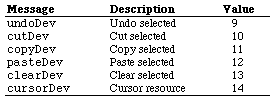

|
|
This Technical Note describes some previously undocumented messages that the
Control Panel can send to a Control Panel device (cdev).
[Oct 01 1988]
|
Introduction
The Control Panel will send messages to a Control Panel device (cdev) in
response to the user selecting the Undo, Cut, Copy, Paste, and Clear items of
the Edit menu. It will also send a message if the cdev contains a 'CURS' =
-4064 resource. The following is a list of the previously undocumented
messages, descriptions, and values:

The Control panel only sends the undoDev, cutDev,
copyDev, pasteDev, and clearDev messages to a cdev
as a result of the Desk Manager sending an edit message to it when an
application calls SystemEdit (_SysEdit). Since the call to
SystemEdit (_SysEdit) is triggered by a mouse-down event in
the menu bar, the messages to the cdev will be sent only as a result of the
user selecting the Edit menu item with the mouse and not by pressing the
Command-key equivalent.
Typically, you will call _DlgCut, _DlgCopy,
_DlgPaste or _DlgDelete upon receipt of the cutDev,
copyDev, pasteDev, or clearDev message, passing the
DialogPtr that has been passed to the cdev to the call.
To respond to Command-key equivalents of the Edit menu commands, you must check
for the specific characters and modifier keys themselves, even though this is
never localized. Once you determine the character to be a Command-key
equivalent, you must alter the what field of the event record that has
been passed to the cdev to be a nullEvent to prevent the Dialog
Manager from inserting the character into the editText item of the
cdev. To alter the event record, you should treat the event record parameter
which is passed to the cdev as a reference. In Pascal, this means declaring
the interface to the cdev as follows:
FUNCTION MyCdev(message, item, numItems, CPanelID: INTEGER
VAR theEvent: EventRecord; (* the 'NEW' way *)
cdevStorage: Handle;
|
In C, you would do the following:
Handle MyCdev(message, item, numItems, CPanelID
theEvent, cdevStorage, CPDialog)
short message, item, numItems, CPanelID;
EventRecord *theEvent; /* the 'NEW' way */
Handle cdevStorage;
|
In assembly language, it means you do not make your own copy of the event
record, so you are probably already set up to change the value of the
what field of the event record.
If the cdev contains a 'CURS' = -4064 resource, the Control Panel will
send it a cursorDev message whenever the cursor is over the cdev part
of the Control Panel's window instead of setting the cursor to the light cross.
The cdev can then set and use its own cursor. The Control Panel will handle
the cursor elsewhere on the screen. The Control Panel does not examine the
contents of the 'CURS' = -4064 resource.
Back to top
References
Inside Macintosh, Volume V, The Control Panel
Back to top
Downloadables
|

|
Acrobat version of this Note (68K).
|
Download
|
|